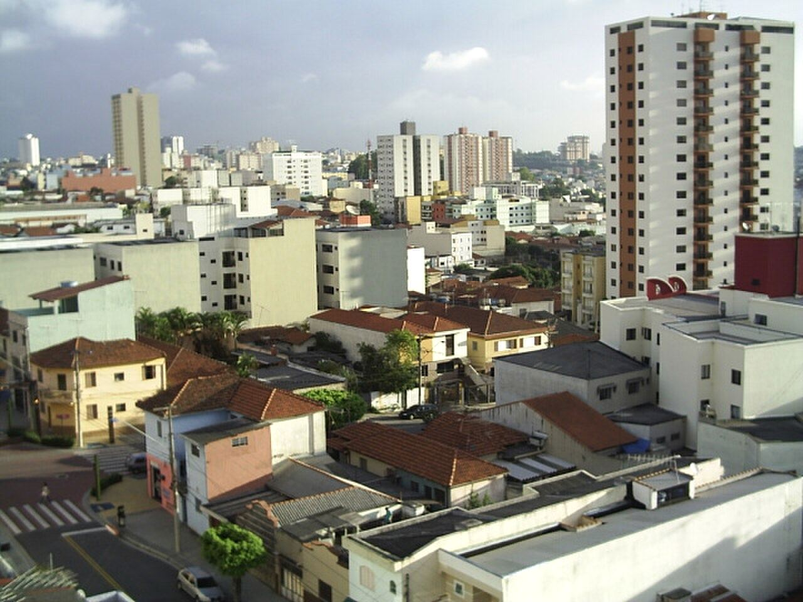
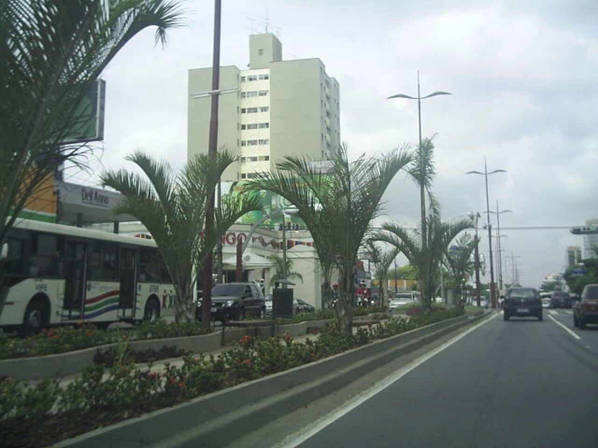

Cadastro digital
SancaGov, explicado sem rodeio
O cadastro da Prefeitura liga o morador, pelo CPF e por uma foto do rosto, a ônibus, saúde e escola. Desde julho, ele decide quem paga a passagem. Veja o que vale hoje e o que fazer.

O que muda para quem mora, estuda ou trabalha em São Caetano do Sul
Cadastro digital
O cadastro da Prefeitura liga o morador, pelo CPF e por uma foto do rosto, a ônibus, saúde e escola. Desde julho, ele decide quem paga a passagem. Veja o que vale hoje e o que fazer.

1 Passo a passo
Tenha à mão o CPF e um comprovante de endereço. Não é preciso ir a um posto.
2 Tarifa Zero
Com a gratuidade aberta a todos, os passageiros por dia passaram de cerca de 20 mil para 80 mil. O Decreto 12.285/2026 restringiu o benefício a partir de 15 de julho.

Quem não mora em São Caetano, ou mora mas ainda não teve o cadastro aprovado, paga R$ 5,00 por viagem nos ônibus municipais. A regra tem exceções: alguns grupos continuam com gratuidade mesmo sem o SancaGov.
Peça o cartão de gratuidade pelo Atende Fácil:
3 Saúde e escola
A Justiça suspendeu a exigência para serviços universais. A decisão ainda é provisória.
Em maio de 2026 o Tribunal de Justiça de São Paulo suspendeu, em caráter liminar, a exigência do SancaGov para saúde e educação, por serem serviços que a Constituição garante a todos. Em 8 de julho o Órgão Especial do TJSP negou o recurso da Prefeitura e manteve a liminar.
O processo ainda não terminou, e a regra pode mudar. Para o Tarifa Zero, a exigência do cadastro continua valendo.
Quem tem o cadastro continua podendo usar as funções do aplicativo: prontuário, receitas e vacinas, e notas e frequência dos filhos na rede municipal.
Ninguém pode negar atendimento no posto ou vaga na escola municipal porque você não tem SancaGov.
4 Segurança
Inaugurada em julho de 2025, junta câmeras, leitura de placas e as forças de segurança num só lugar.
A central reúne câmeras com reconhecimento facial e leitura de placas (LPR), viaturas da GCM com câmera e GPS, e trabalha junto com Polícia Militar, Defesa Civil, trânsito e saúde. Em emergência, ligue 0800 7000 156.
| Câmeras integradas | 710 510 da Prefeitura e 200 de condomínios e comércios |
|---|---|
| Foragidos capturados | mais de 200 |
| Chamados pelo 0800 | mais de 40 mil |
Tem condomínio ou comércio? Dá para ligar suas câmeras ao sistema pedindo pelo e-mail suporte.smartsanca@saocaetanodosul.sp.gov.br.
O que está anunciado
5 Cronologia
Tite Campanella assume a Prefeitura (2025–2028) e põe a digitalização dos serviços entre as prioridades.
Inauguração do Smart Sanca, com mais de 500 câmeras e leitura de placas.
Lançamento do SancaGov, com cadastro liberado em fases.
TJSP suspende por liminar a exigência do cadastro para saúde e educação.
Abre a fase 4: todos os moradores podem se cadastrar.
Órgão Especial do TJSP rejeita o recurso da Prefeitura e mantém a liminar.
Tarifa Zero passa a valer só para moradores cadastrados e exceções.
6 Perguntas
Qualquer morador de São Caetano do Sul com CPF. Desde 8 de junho de 2026 o cadastro está aberto a todos, pelo site oficial.
Não, por enquanto. A liminar do TJSP impede que o cadastro seja exigido para saúde e educação. Ele continua exigido para o Tarifa Zero.
O site também abre no computador, e o Atende Fácil faz o atendimento presencial (Rua Major Carlo Del Prete, 651, Centro · (11) 4232-8888).
Segundo a Prefeitura, a foto serve para validar o cadastro, os dados são criptografados, seguem a LGPD e só órgãos autorizados têm acesso. Pela LGPD, você pode pedir à Prefeitura informações sobre como seus dados são usados.
Depende da instituição. Estudantes das escolas listadas nas exceções continuam com gratuidade, mas precisam pedir o cartão pelo Atende Fácil.
Enquanto não for aprovado, a passagem é cobrada, a não ser que você esteja nas exceções. Para saber em que pé está o pedido, procure o Atende Fácil.